Witam
Na sprzedaż Ford Explorer w wersji ST
Rok produkcji: 2021
Pojemności 3.0
Moc: 400km
Kolor : Carbonized gray metallic
Przebieg 63000km.
Auto posiada kola 21" z oponami all season
Wyposażenie :
- Silnik: 3.0 V6 Ecoboost Twin-Turbo 400 km
- Skrzynia: aut. 10-biegowa
-Napęd: AWD + tryby jazdy (Normal, Sport, Trail, Eco,DeepSnow/Sand, Slippery, Tow/Haul)
- Zawieszenie sportowe (Ford Performance)
- Hamulce sportowe (Ford Perdormance)
- Tapicerka skórzana z fotelami
grzanymi i wentylowanymi + masaże
- Grzane fotele drugiego rzędu
- Środkowe fotele kapitańskie
- Cyfrowe zegary
- Oświetlenie Full LED
- Oświetlenie ambientowe kabiny
- Kierownica multimedialna obszyta skórą , podgrzewana , elektrycznie regulowana.
- Dach panoramiczny,czarna podsufitka.
- Klimatyzacja 3-strefowa
- System multimedialny SYNC3 z ekranem pionowym
10.1 cala, GPS, USB, AUX, Bluetooth, CarPlay /Android Auto
- Ładowarka bezprzewodowa
- Nagłośnienie Bang&Oulfsen (14 głośników)
- Kamera 360 stopni,
- Czujniki PDC parkowania przód/tył
- Kamera z przodu i tyłu
- Aktywny tempomat (ACC)
- System utrzymania pasa ruchu
- Czujniki martwego pola (BLIS)
- Klapa elektryczna, otwierana za pomoca gestów nogą
- Lusterka zewnętrzne elektryczne, podgrzewane, składane z pamięcią ustawień.
- Przyciemniane delikatnie szyby przednie
- Przyciemniane szyby tylne plus rolety.
-Czujniki deszczu
- Relingi dachowe
- Gniazda 110V / 12V
- Dostęp bezkluczykowy + zdalne odpalanie pojazdu
- System ostrzegania o kolizji.
- Asystent parkowania
- Hak
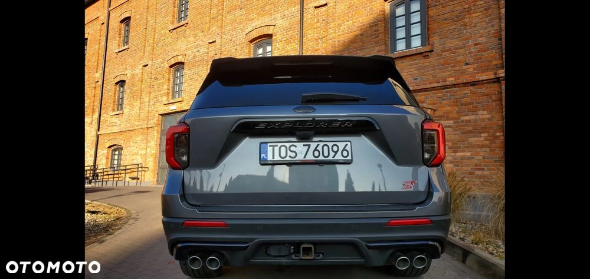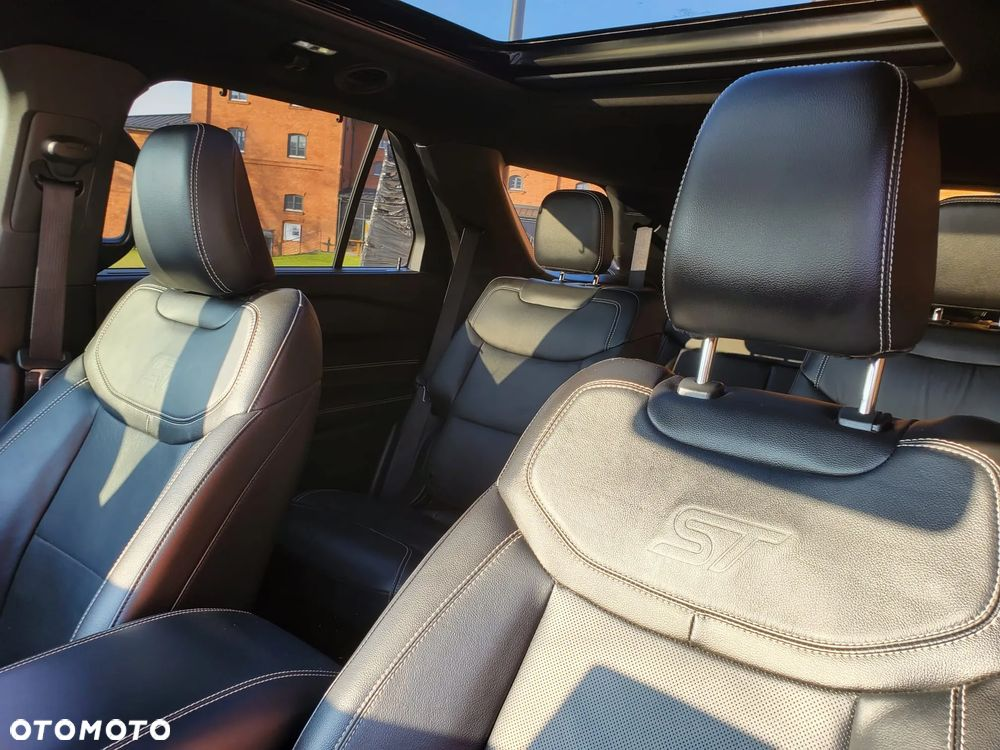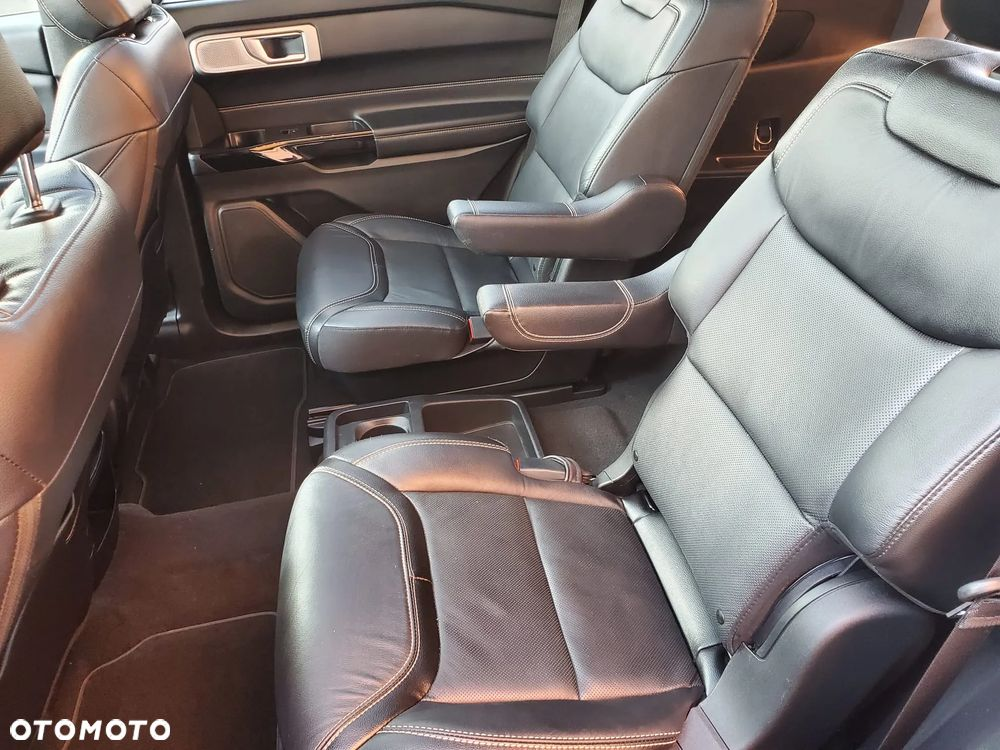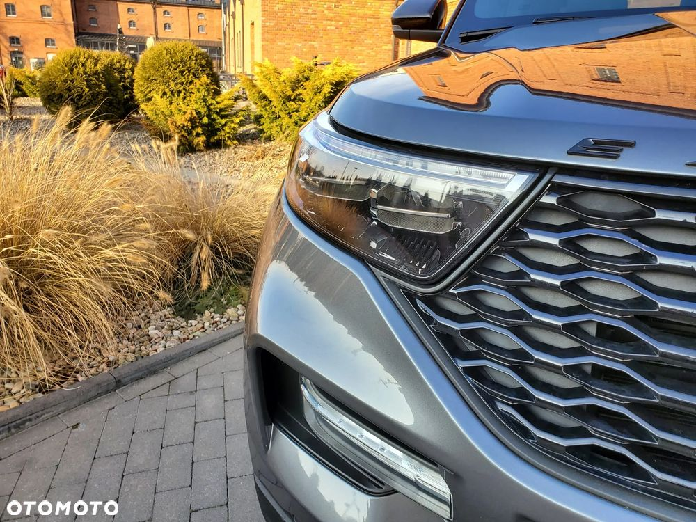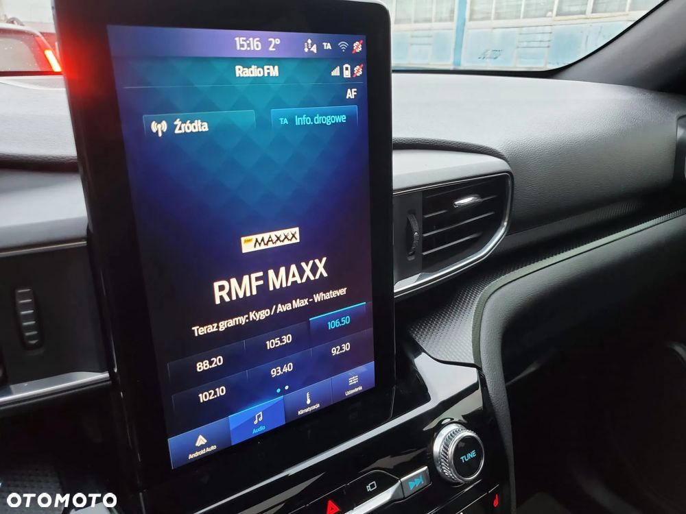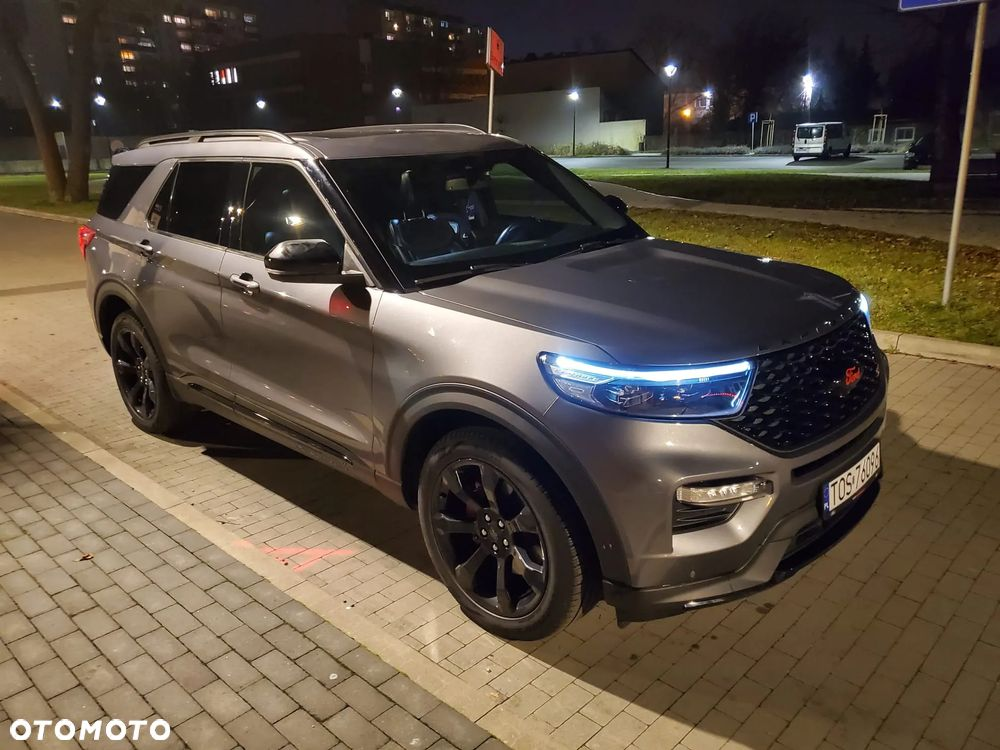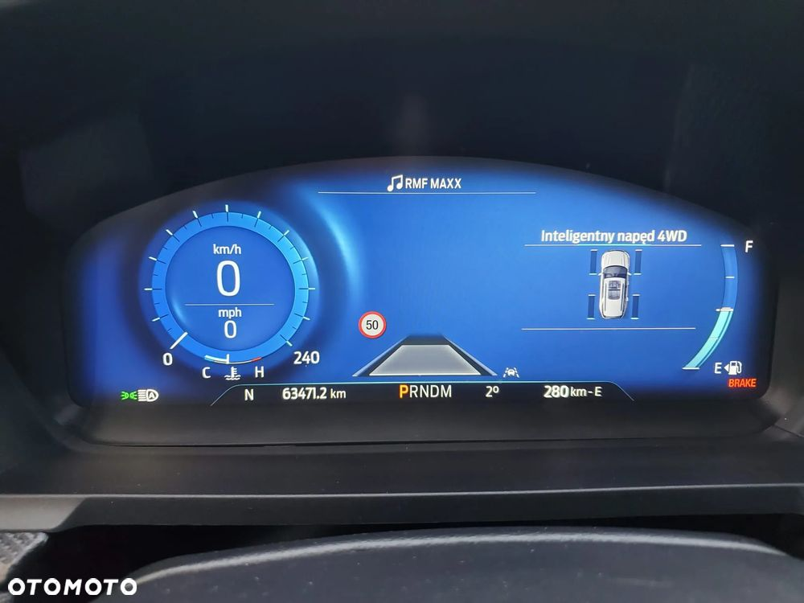 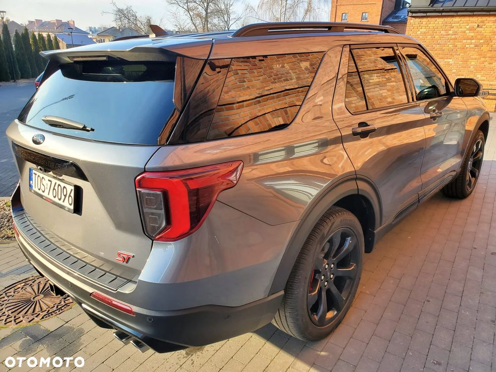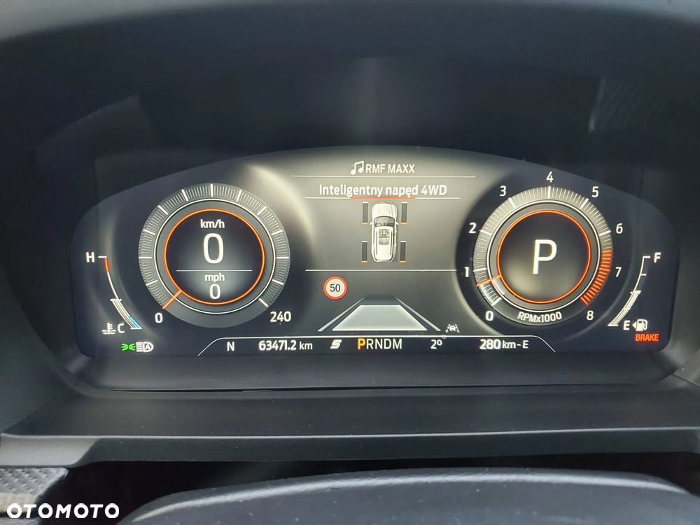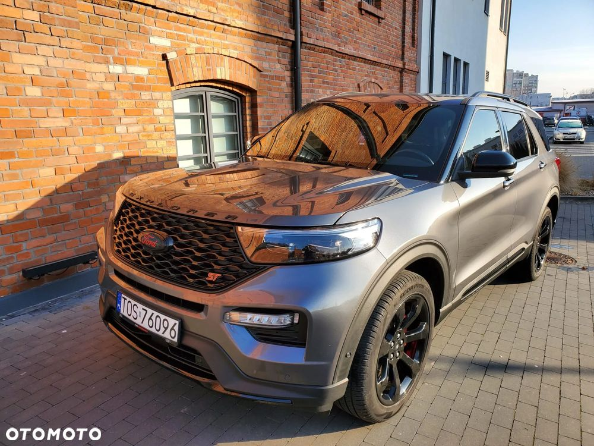
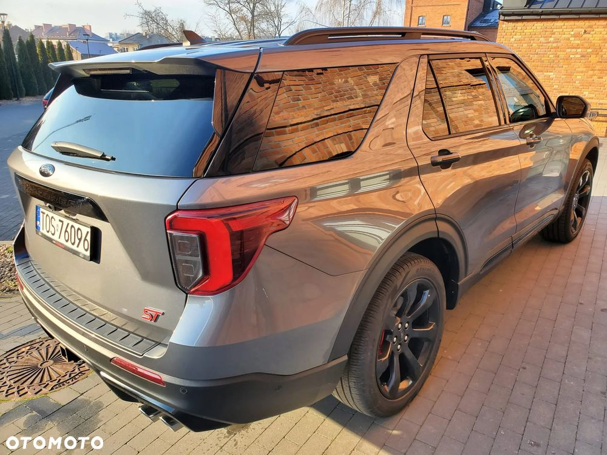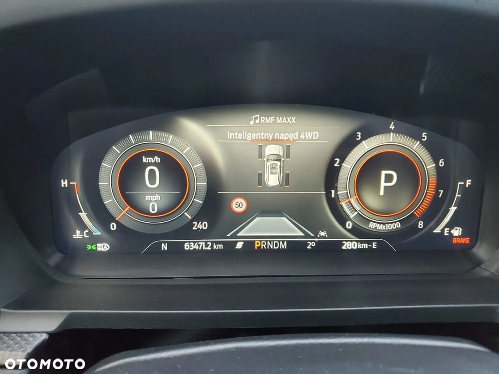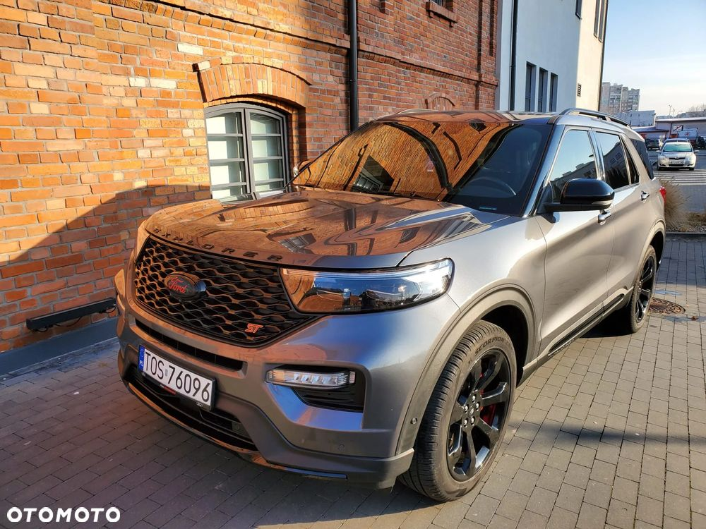